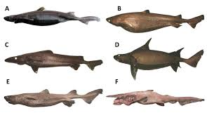
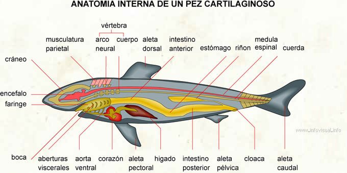

Introducción
Los seláceos son un grupo de peces cartilaginosos que incluye a los tiburones y las rayas. Se caracterizan por su esqueleto hecho de cartílago en lugar de hueso y por la presencia de varias hileras de dientes, que se reemplazan constantemente a lo largo de su vida.

Clasificación
Los seláceos se dividen en dos grupos principales:
- Tiburones: Son los depredadores marinos más emblemáticos, conocidos por sus dientes afilados y cuerpos aerodinámicos.
- Rayas: Son peces aplanados con cuerpos en forma de disco, adaptados a vivir en el fondo marino.
Características
- Esqueleto cartilaginoso, más ligero que el hueso.
- Hileras de dientes que se reemplazan constantemente.
- Cuerpo hidrodinámico, adaptado para la velocidad en el agua.
- Hábitos alimenticios que varían entre especies, desde carnívoros hasta planctívoros.
